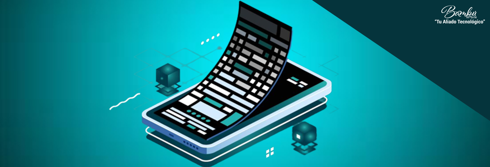
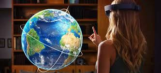

En la era digital actual, las aplicaciones virtuales han emergido como herramientas disruptivas que están redefiniendo la forma en que interactuamos con el mundo. Desde la educación hasta la medicina, pasando por el entretenimiento y los negocios, estas tecnologías - que incluyen realidad virtual (RV), realidad aumentada (RA) y entornos virtuales - están creando nuevas dimensiones de experiencia y conocimiento. Este ensayo explora exhaustivamente el panorama de las aplicaciones virtuales, analizando sus fundamentos tecnológicos, áreas de implementación, beneficios, desafíos y perspectivas futuras.
Fundamentos Tecnológicos de las Aplicaciones Virtuales
Tipos de Tecnologías Virtuales
Las aplicaciones virtuales se sustentan en tres pilares tecnológicos principales:
• Realidad Virtual (RV): Sistemas inmersivos que crean entornos completamente digitales (ej. Oculus Rift, HTC Vive)
• Realidad Aumentada (RA): Superposición de elementos digitales sobre el mundo real (ej. Pokémon GO, Microsoft HoloLens)
• Realidad Mixta (RM): Combinación interactiva de entornos reales y virtuales (ej. Magic Leap)
Componentes Esenciales
El desarrollo de aplicaciones virtuales efectivas requiere:
• Hardware especializado: Sensores, cámaras, dispositivos hápticos
• Software avanzado: Motores de renderizado 3D (Unreal Engine, Unity)
• Interfaces intuitivas: Sistemas de seguimiento ocular, reconocimiento de gestos
• Conectividad robusta: 5G, edge computing para experiencias en tiempo real


Ámbitos de Aplicación
Educación y Formación
Revolución en los métodos de aprendizaje:
• Simulaciones históricas inmersivas
• Laboratorios virtuales para prácticas científicas
• Entrenamiento profesional en entornos de riesgo controlado (bomberos, cirujanos)
Sector Salud
Aplicaciones transformadoras:
• Terapias de exposición para trastornos psicológicos
• Rehabilitación motriz mediante juegos serios
• Visualización 3D de anatomía para planificación quirúrgica


Entretenimiento y Medios
Nuevos paradigmas de consumo:
• Cine interactivo con narrativas no lineales
• Conciertos y eventos masivos virtuales (ej. Travis Scott en Fortnite)
• Museos y exposiciones digitales con acceso global
3. Sets Virtuales: El Futuro de la Producción Audiovisual
a) ¿Qué es un Set Virtual?
Un set virtual es un entorno digital donde se graban películas, series o transmisiones en vivo, eliminando la necesidad de escenografías físicas. Ejemplos:
The Mandalorian (Disney+): Usa StageCraft de Industrial Light & Magic (ILM) con pantallas LED gigantes.
Noticieros y Streamers: Presentadores usan fondos virtuales con green screen o RV.
b) Ventajas sobre los Sets Tradicionales
Ahorro de costos: No se requieren construcciones físicas ni locaciones.
Flexibilidad: Cambios de escenario en tiempo real con ajustes digitales.
Posproducción acelerada: Efectos visuales integrados directamente durante la grabación.
c) Retos Técnicos
Sincronización: La cámara debe moverse en concordancia con el entorno virtual para evitar inconsistencias.
Iluminación realista: La luz digital debe coincidir con la de los actores reales.